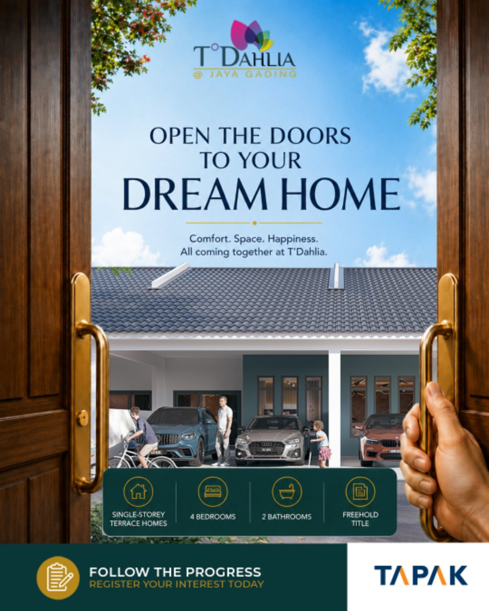
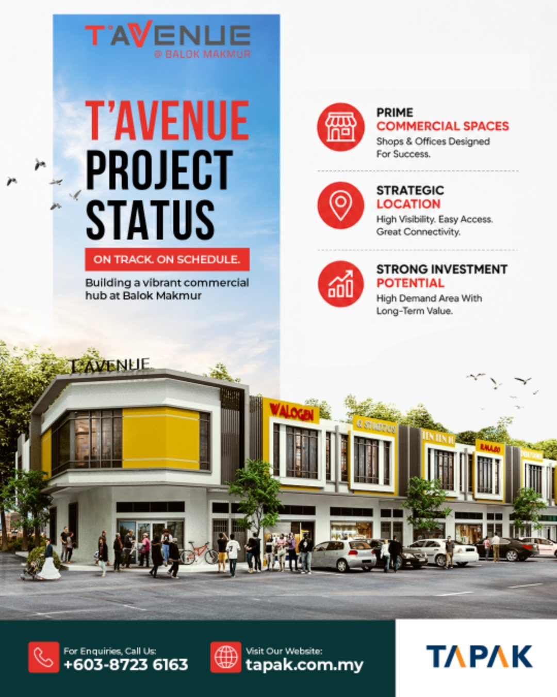
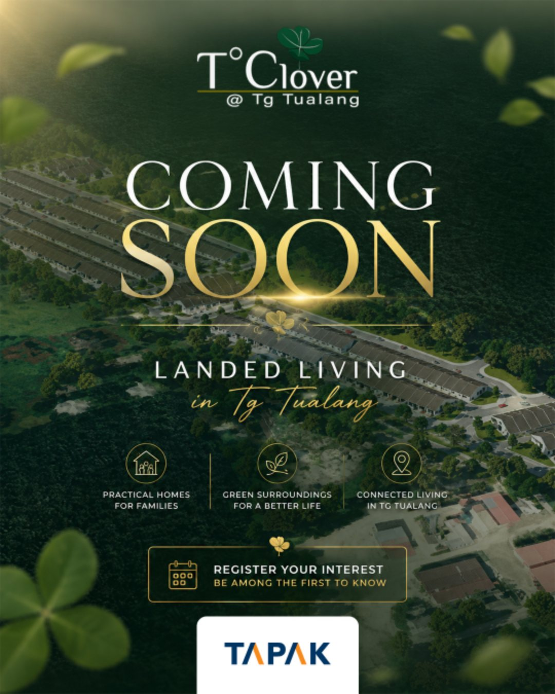
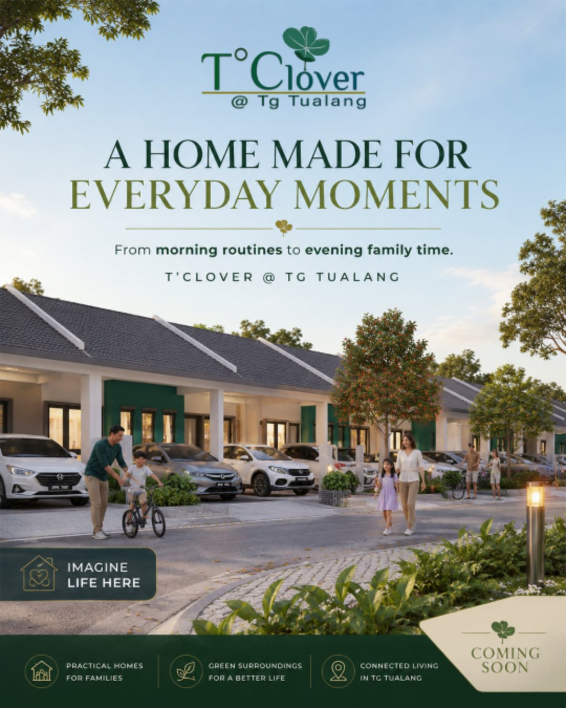
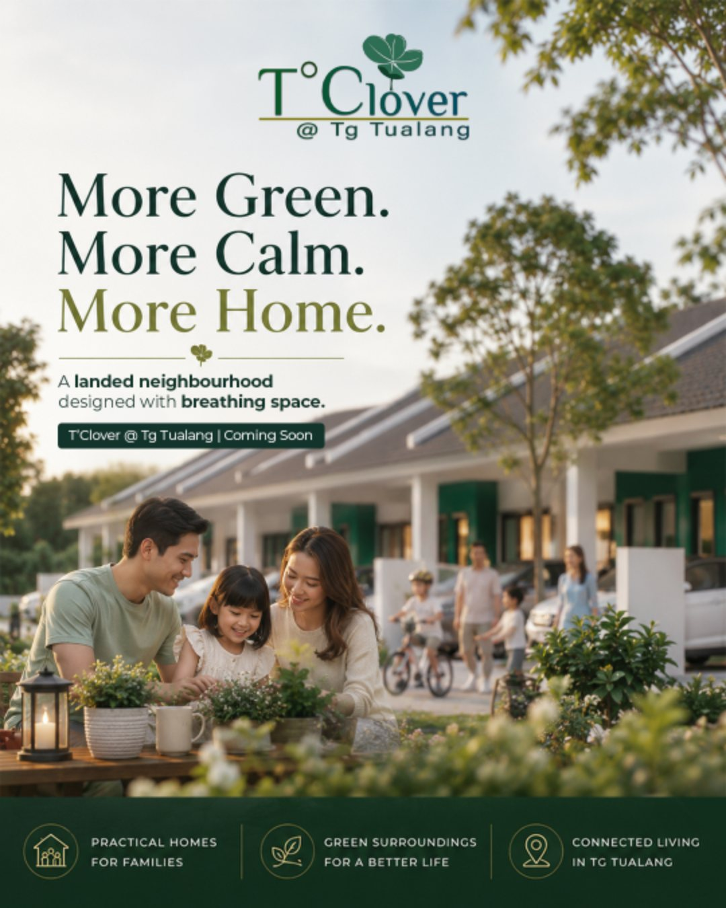

Client Case Study · Tapak Group
Homes,
Homes,
Taking Shape.
Monthly social content for a Kuantan-based property developer, turning construction milestones and new launches into a steady drumbeat of trust.

Monthly social content for a Kuantan-based property developer, turning construction milestones and new launches into a steady drumbeat of trust.
Tapak Group builds landed homes and commercial spaces across Pahang and Perak. The challenge wasn't a single launch, it was keeping buyers engaged month after month across several projects at very different stages, some rising out of the ground, some only just announced. I built a monthly content system that mixes progress updates, lifestyle awareness posts, and homebuyer education, each one tuned to the project and the audience it needed to reach.
Freehold single-storey terrace homes, four bedrooms and two bathrooms, built for families who want space and long-term value. The July content did two jobs at once: track real construction progress so buyers could watch their future home take shape, and paint the everyday lifestyle waiting for them, from the school run to a quiet evening at home.


Freehold double-storey shop offices in a strategic commercial spot near Gebeng Industrial Estate, MCKIP and Kuantan Port. This one spoke to a different audience, business owners and investors, so the content led with the three things they actually care about: visibility, accessibility and long-term commercial potential, framed as an on-track project status update.

A new landed neighbourhood in Perak, designed around green surroundings and everyday family living. With the project still pre-launch, the August campaign was pure anticipation, building the story before the doors even opened, so early interest could be captured while momentum was high.



Property is one of the biggest decisions anyone makes, so alongside the launch and progress posts I ran an educational thread that met buyers where their real questions were, breaking down home-financing options like LPPSA for public servants and SJKP for first-time buyers in plain language. It positioned Tapak as a developer that helps you understand the journey, not just one that sells you a house.